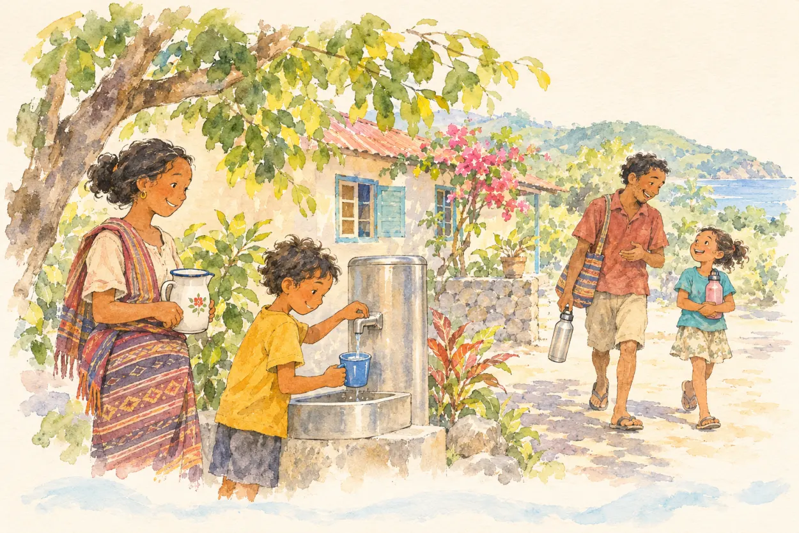

Diocesan Girls’ School GX Club
A little drop
Two bead eyes, a loop of blue yarn, and a story about drinking water. A handmade charm from Hong Kong, inspired by GX Foundation’s work.

Hong Kong · The school stall
Why a water drop?
At the school stall, a whole box of little drops peeks out from silver and gold tinsel. Beside them sit two paper cups. One says “Filtered”. The other says “Tap water”.
The drop can clip onto a schoolbag. The cups leave you with a question. What does it take to bring drinking water to someone’s hands?
GX Foundation · Timor-Leste
The next cup.
In July 2024, GX Foundation launched its Direct Potable Water Project in Timor-Leste. Churches, hospitals and schools became pilot sites where people could fill a cup or bottle with drinking water.

Hong Kong · After the rain
Under the flowerpot.
After a Hong Kong rain shower, a flowerpot saucer can hold a little pool. Mosquitoes can breed in standing water. Try tipping the saucer.
Hong Kong FEHD mosquito guidance ↗